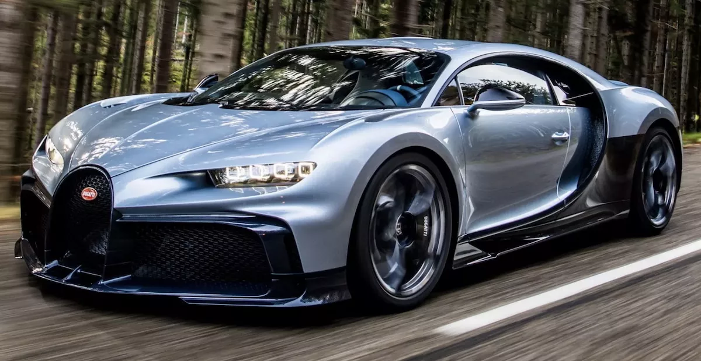
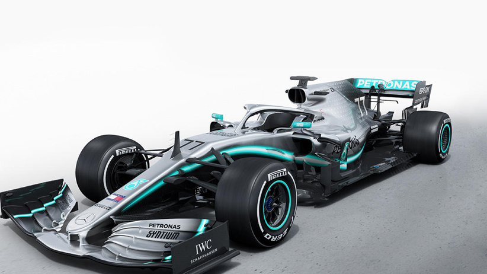
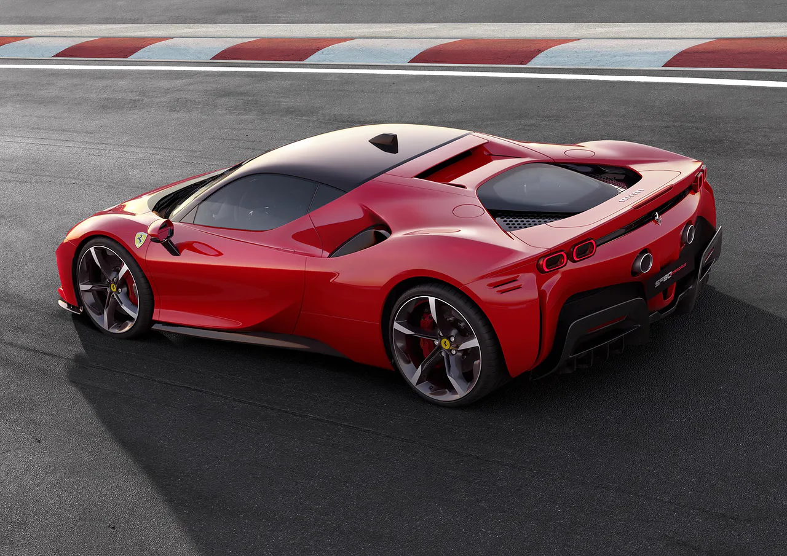
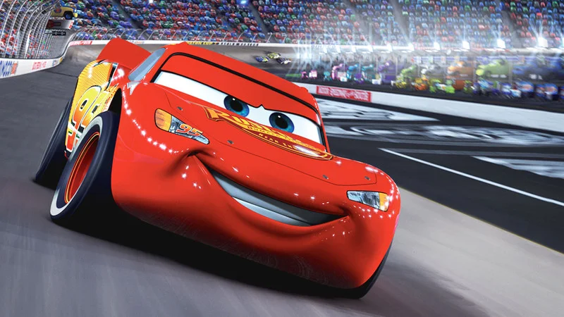

5. Lamborghini aventdor
4. Bugatti Chiron
 Bugatti
3. Bolid Formuły 1
 Bolid Mercedesa
2. Ferrari SF90
 Ferrari
1. ZYGZAK MCQUEEN (zwycięzca 7 złotych tłoków, najlepsze auto znane ludzkości)
 Najlepsze auto na świecie